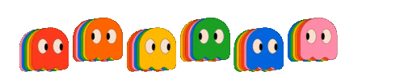

<nav class="navbar navbar-expand-md fixed-top">
  <div class="container">
    <a class="navbar-brand"></a>
    <div class="offcanvas offcanvas-end" id="offcanvasNavbar" aria-labelledby="offcanvasNavbarLabel">
      <div class="offcanvas-body">
        <ul class="navbar-nav justify-content-center flex-grow-1 pe-3">
          <li class="nav-item">
            <a class="nav-link active" aria-current="page" routerLink="/home">Home</a>
          </li>
          <li class="nav-item">
            <a class="nav-link" aria-current="page" routerLink="/quien-soy">Quien Soy</a>
          </li>
           <li class="nav-item">
            <a class="nav-link" aria-current="page" routerLink="/juegos">Juegos</a>
          </li>
          <li class="nav-item">
            <a *ngIf="!user" class="nav-link" routerLink="/auth/registro">Registro</a>
          </li>
        </ul>
      </div>
    </div>
    <a *ngIf="!user" class="button-custom" routerLink="/auth/login">Login</a>
    <button class="navbar-toggler pe-0" type="button" data-bs-toggle="offcanvas" data-bs-target="#offcanvasNavbar" aria-controls="offcanvasNavbar">
      <span class="navbar-toggler-icon"></span>
    </button>
    <span *ngIf="user" class="userInfo">
      <span style="color: rgb(215, 31, 31);" class="navbar-brand" href="#">{{user.username}}</span>
    </span>
    <button *ngIf="user" class="button-custom" type="button" (click)="cerrarSesion()" aria-controls="offcanvasNavbar">Cerrar Sesion</button>
    <button *ngIf="user" class="button-custom btn-chat" type="submit" (click)="toggleChat()">Chat</button> <!--Si toco el el boton el chatVisible cambia a true-->
  </div>
</nav>

<app-chat [abierto]="chatVisible"></app-chat>


<!--Se muestra mi componente de chat y tambien se muestra el app-chat-->
<!-- <div *ngIf="chatVisible" class="chat-container">
  
</div> -->